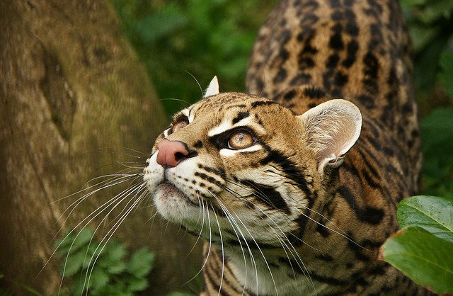
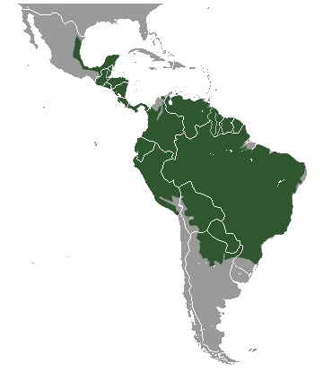

El ocelote es una especie de felino de mediano tamaño, con una longitud de cabeza y cuerpo de 70 - 90 cm, cola relativamente corta (30-40 cm, un 45% de la longitud de cabeza y cuerpo) y un peso en el entorno de los 11 kg. A nivel de Mesoamérica, es el tercer felino más grande luego del jaguar y el puma, y el más grande los pequeños felinos manchados, mayor que el caucel y el tigrillo.
Poseen grandes orejas y gran sentido del oído, con unos ojos grandes y expresivos. Las extremidades anteriores tienen cinco dedos y las posteriores cuatro; las zarpas están provistas de almohadillas, que permiten al animal caminar sin hacer ruido, y con uñas largas, afiladas y completamente retráctiles, esto le resulta muy útil cuando no es necesario utilizarlas como, por ejemplo, al correr, y evitar, de este modo, su deterioro. Tiene pelaje corto.
Sus ojos están muy bien adaptados a los cambios de luminosidad: las pupilas se contraen hasta formar una fina y negra línea vertical durante los días de mucha luz, pero se abren y se redondean en situaciones de oscuridad.
El ocelote está presente desde el sur de Estados Unidos hacia el sur, en todos los países de América continental, el norte de Argentina y de Uruguay.
